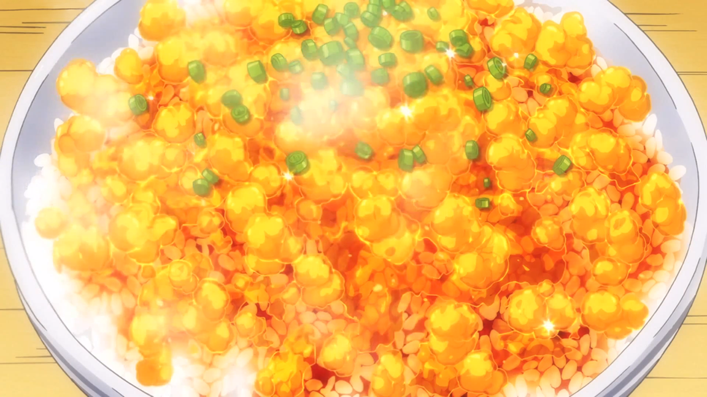

Transforming Furikake Gohan

Description
A steaming hot bowl of rice topped with eggs and the clothes-busting transforming furikake broth.
Ingredients
- Chicken Wings
- Eggs
- Rice
- Ginger (grated)
- Bonito Broth
- Soy Sauce
- Sugar
- Mirin
- Sake
- Spring onion (thinly sliced)
Method
- Heat sesame oil in frying pan and sauté chicken wings until golden brown on both sides.
- Add chicken wings to pot with broth, ginger, sake, sugar, soy sauce, and mirin. Bring to boil then simmer until reduced by half.
- Pour broth into a container to cool. Once cooled, place in refrigerator to chill and harden.
- Scramble eggs in pan, whisking hard to create small curds. Set to one side.
- Once broth has hardened, cut into small cubes and pour over a bowl of hot rice with the eggs. Garnish with spring onion.
- Close the curtains before you taste it.